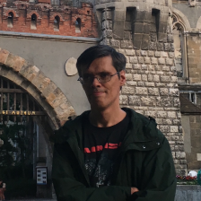

Everland - социально-предпринимательский проект
Для кого мы работаем
- Для людей с инвалидностью
- Для работодателей
- Для КСО-партнеров
Наши направления
- Доступность услуг DisQuestion
- Трудоустройство
- Биржа проектов и готовые решения
- Агентство
- Коворкинг
- Для людей с инвалидностью
Главное в работе
- Заработанные средства
- Инклюзивность
- Использование Digital
- Крупные клиенты
- Свои исследования
- Большой опыт
Everland в цифрах
-
 -